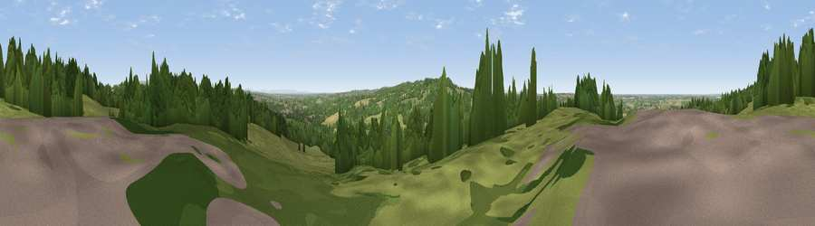

Viewpoint near Appley Bridge
#14436 in England · top 35% of its area beats it · near Appley BridgeWhere it is
The exact computed spot (SD 50868 10712). Click the marker for map links.
The view, rendered

A 360° render of this exact spot computed from the terrain model, tree cover and land cover — summer colours, afternoon light, calibrated against photographs of famous viewpoints. Real trees, hedges and buildings will differ in detail.
The panorama
Grey silhouette: terrain skyline in each direction (720 bearings, Earth curvature and refraction included). Dashed green: skyline with trees (+15 m) and buildings (+8 m) as obstacles. Blue strip: how far the ground is visible on each bearing.
Where the view opens
Wedge length = distance to the farthest visible ground on that bearing (vegetation-aware). Rings at 10, 25 and 50 km.
What fills the view
47% grassland · 37% woodland · 11% cropland · 5% built-up ·
Angular shares of the visible panorama (visual magnitude), not map area. Landscape diversity 0.50 (0–1 Shannon).
Key numbers
More beautiful places nearby
The staircase of upgrades: each row has a higher view potential than everything closer. Driving times are estimates from straight-line distance, calibrated against real road routing — check an actual route before setting out.
| Place | Direction | Drive | Score |
|---|---|---|---|
| Viewpoint near Parbold | NNW · 2 km | ~5 min | 71.2 |
| Viewpoint near Dalton | SSW · 3 km | ~7 min | 74.2 |
| Great Lawn | ENE · 13 km | ~25 min | 77.1 |
| Rivington Pike | ENE · 14 km | ~25 min | 81.9 |
| White Brow | E · 15 km | ~27 min | 82.9 |
| Warton Crag | N · 62 km | ~85 min | 83.2 |
| Viewpoint near Grange-over-Sands | N · 68 km | ~92 min | 83.4 |
| Viewpoint near Cartmel | NNW · 70 km | ~93 min | 87.0 |
53.59067, -2.74373 · source: osm viewpoint · position refined by local search. Computed location — check access rights before visiting.